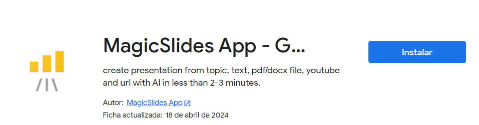
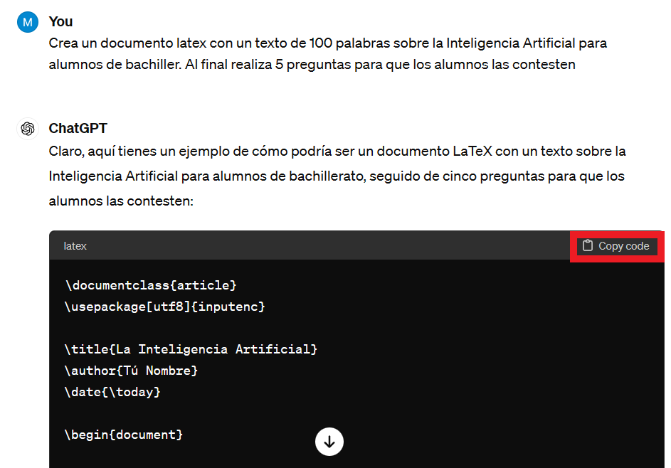

Resúmenes y presentaciones¶
Resúmenes¶
Las herramientas de IA para la generación de textos, también nos dan la posibilidad de resumir textos largos concretando los puntos claves y facilitando la comprensión del texto de forma más rápida.
La IA transparente
Actualmente hay un cambio de tendencia en las aplicaciones de IA. Hasta ahora eran mas o menos vistosas, pero están evolucionando hasta un punto en el que la tecnología ya es transparente.
La IA ya está integrada en muchas aplicaciones habituales por defecto.
Para la generación de resúmenes necesitamos:
- Texto para resumir que puede ser un libro, capítulo, ensayo, noticia, etc.
- Herramienta IA como ChatGPT, Gemini, etc.
Importante
No debemos quedarnos directamente con el resultado sin antes leerlo y verificar que el resumen obtenido se ajusta a lo que nosotros queremos ofrecer al alumno.
Lliurex 25 y la IA¶
En la Comunidad Valenciana se dispone del sistema operativo Lliurex, de libre distribución.
A partir de la versión 25 se ha realizado un esfuerzo importante de integración de la IA, de manera controlada y siguiendo ciertas pautas éticas.
Esto supone una importante ampliación de posibilidades de muchas aplicaciones que ya están integradas en la distribución y pueden ser utilizadas directamente en el aula.
En el siguiente enlace hay disponible información sobre las nuevas características y sus posibilidades. Entre ellas cabe destacar el uso de IA en el procesador de texto write de la suit ofimática LibreOffice.
Uso de IA generativa de texto en LibreOffice Writer
Herramientas para la generación de resúmenes¶
Es un generador de resúmenes que utiliza tecnología avanzada de IA para desglosar un contenido extenso en resúmenes más rápidos de leer y entender.
Es una herramienta gratuita para resumir y simplificar el contenido extenso para poder facilitar la lectura.
Característica destacada
La herramienta permite seleccionar de una manera muy gráfica el tono de la respuesta.
De esta forma se consigue una respuesta más ajustada al contexto de uso del resumen, aportando una gran variedad de estilos.
PopAi es una herramienta que proporciona respuestas al instante, ya que integra muchas herramientas (no todas gratuitas) con diferente propósitos, que pueden resultar interesantes para realizar diferentes procesamientos de textos.
Se pueden realizar diagramas de flujo, generación de imágenes, lectura de PDF y generación de Powerpoint.
Por contra, hay que considerar el precio de este servicio. Se basa en el uso de otros modelos y aunque tiene algunos que permite probar en modo sin pago, son muy limitados.
Free vs gratis
La opción free de muchos servicios debe considerarse como libre uso, pero no hay que confundirlo con gratuito.
En muchos casos el pago puede ser nuestros datos, bien al formalizar el registro en la plataforma. O también con los documentos facilitados para el servicio.
Hay que ser muy cuidadosos con la confidencialidad de los datos educativos.
Más que una herramienta para resumir, es una evolución personalizada de chat generativo. Se envia un fichero, y se puede preguntar sobre el contenido del documento. Podemos solicitar desde un extracto, hasta realizar preguntas concretas sobre el contenido. Las respuestas que se obtienen siempre hacen referencia al contexto del documento enviado.
Para utilizarlo, NO es necesario estar registrado. Sólo en el caso de querer tener acceso al historial, sera necesario acceder con un usuario.
Presentaciones¶
Existen diferentes herramientas para la creación de presentaciones con IA. Estas herramientas facilitan la generación rápida de materiales educativos sin requerir esfuerzo en el diseño y formato. La IA asume gran parte del trabajo ya que ofrecen diseños personalizables y profesionales sin tener grandes conocimientos de diseño gráfico. Las más utilizadas son:
- Canva: Incluye herramientas de escritura de IA en su versión gratuita. En la versión de pago Canva Pro, proporciona un diseñador de presentaciones basado en IA entre otras utilidades.

- Gamma App: Herramienta para crear contenido interactivo y visual para las presentaciones, documentos y páginas Web, utilizando IA. Integra diversos elementos multimedia como GIFs, vídeos y gráficos.

- Presentations.ai: Plataforma que utiliza IA para la creación de diapositivas, sugiere diseños, estilos de texto, gráficos y otros elementos que mejoran la presentación.
- MagicSlides: Crea presentaciones de Google a partir de un tema, texto, vídeo o dirección Web.

Después de instalar la herramienta accedes a las presentaciones de Google:

Crear documento en formato PDF¶
Las herramientas conversacionales como ChatGPT tienen la posibilidad de crear documentos en LaTeX que podemos transformar en PDF. LaTeX es un archivo de texto plano que describe la estructura y el contenido de un documento, incluyendo elementos como el tipo de documento (artículo, libro, carta, etc.), el formato de página, el estilo de fuente, los encabezados y pies de página, las secciones y subsecciones, las citas bibliográficas, etc. Una vez que se ha escrito el código LaTeX, se compila para producir un documento PDF final con el formato deseado.
Overleaf es una plataforma en línea que permite a los usuarios escribir, editar, compilar y compartir documentos LaTex. Una característica importante es que permite la colaboración en tiempo real para que varios usuarios puedan trabajar juntos en el mismo documento LaTeX simultaneamente.
Pasos:
- Registrarse en Overleaf.
- Crear un nuevo proyecto:

- Proyecto en blanco y ponerle nombre al proyecto.
- Con la herramienta ChatGPT crea un documento latex sobre el tema que quieras y copia el código.

- Borra lo que aparece en el panel de la izquierda y pega el texto anterior. Pulsa el botón Compile (Recompile). Puedes poner tu nombre o modificar lo que quieras en el panel de la izquierda. Recuerda que después de modificar debes recompilar. Una vez el documento sea de tu agrado lo puedes descargar.